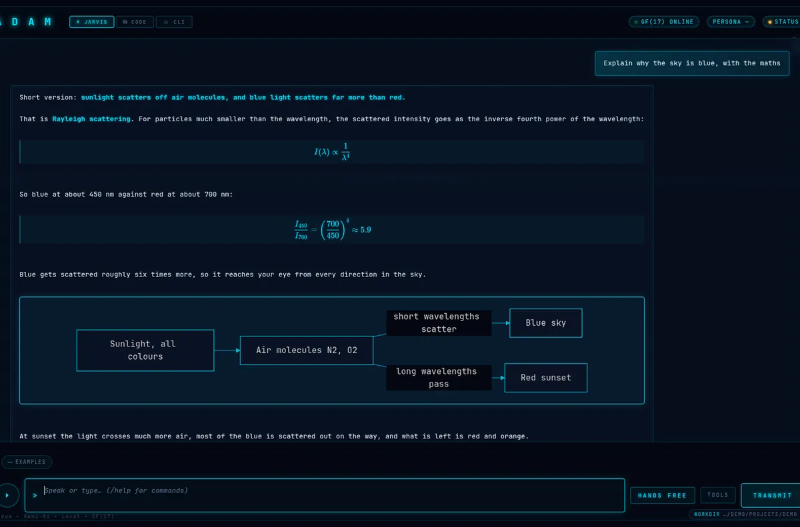
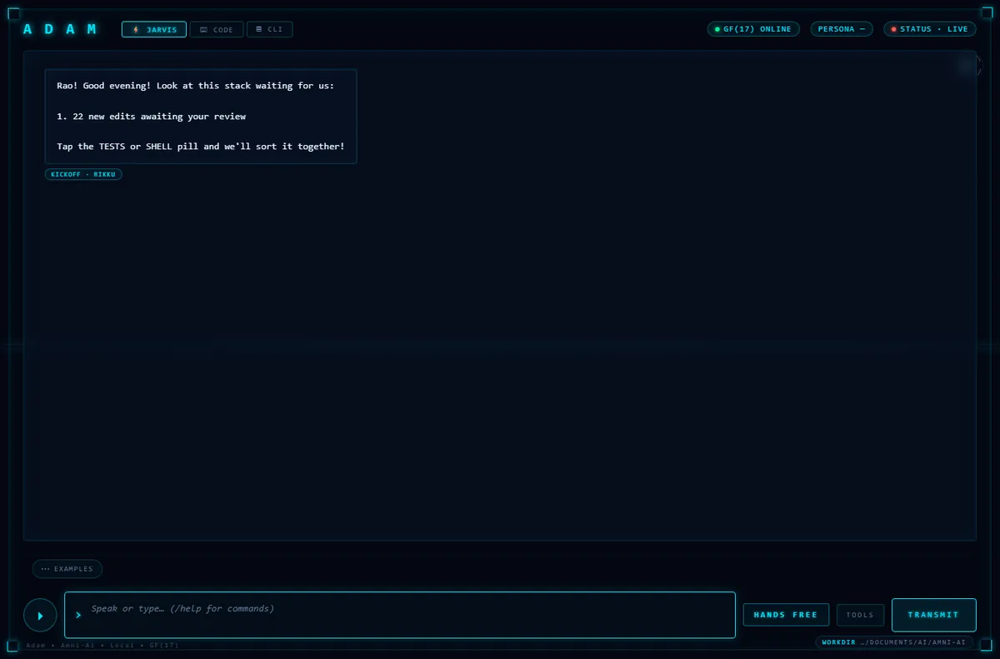
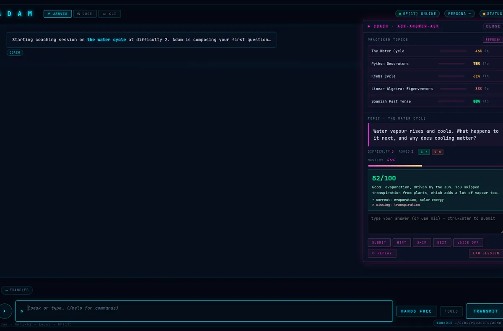
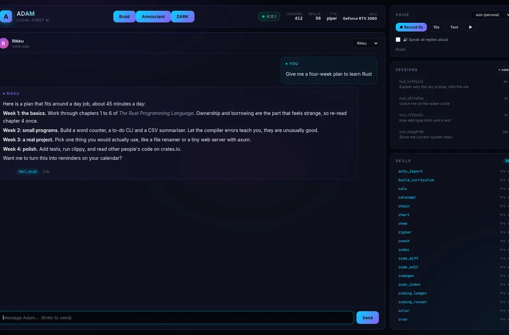
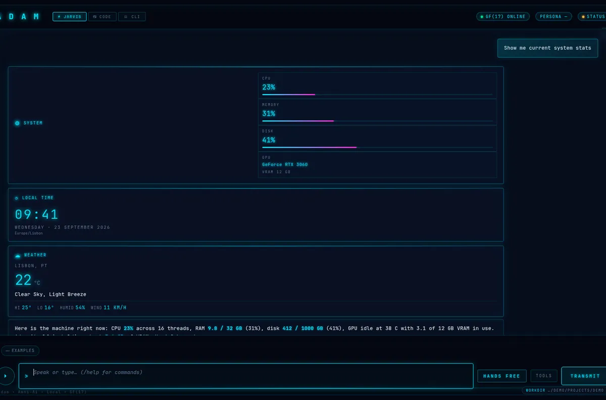

AI ASSISTANT ON YOUR OWN PC • RUNS ON A 4 GB GRAPHICS CARD • LEARNS FROM YOU
Chat, talk, or show it things. It runs on your own graphics card, and nothing leaves your PC.


Correct it once and the correction sticks. A repeat question comes back in about 80 ms.

A dashboard and live widgets for what it’s doing and what it knows.


One script sets everything up and opens localhost:7700. On Windows, run install.bat.
git clone https://github.com/Amnibro/Amni-Ai cd Amni-Ai python install.py
Needs a 4 GB graphics card (8 GB recommended). Anything that speaks Ollama or OpenAI can connect to it. Free for personal, research, educational and non-profit use · CC BY-NC 4.0 · commercial licensing · full install guide · changelog